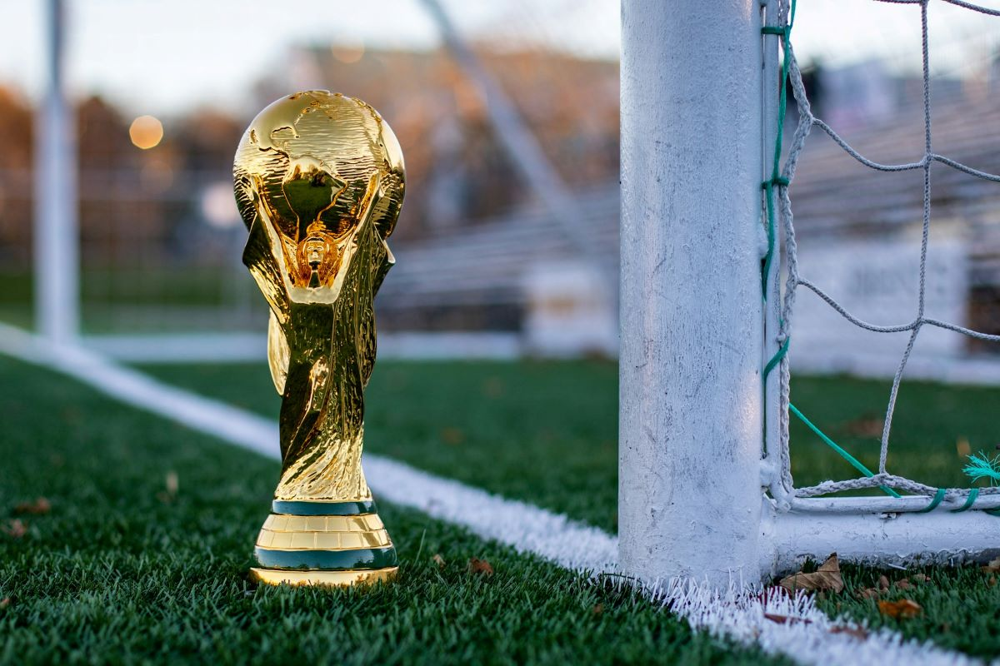

Brasil ganha a copa e 8 a 2 depois de um jogo acirrado contra Suiça
Por: Ancelotti
Brasil, após sua vitoria contra Portugal, finalmente se classificou para tentar o hexa novamente. O jogo começou com Neymar fazendo um gol nos 5 minutos de partida, após esse feito Brasil acabou abrindo brechas, fazendo assim Suiça começar a liderar depois de dois gols inacreitáveis, mas Brasil se recuperou com mais um gol de Neymar e dois gols e Vini Jr., depois disso o Brail oi só pra frente com o Endrick marcando mais dois gols, e nos 6 minutos de acrescimo Raphinha e Paqueta deixaram sua marcando também cada um fazendo um gol. Assim tornando o Brasil, Hexacampeão!!!